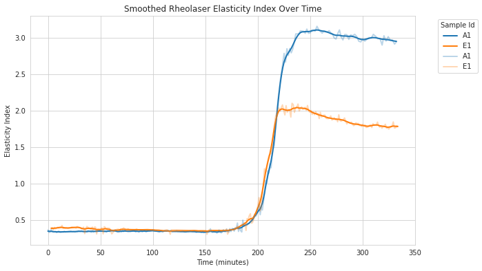

Curve Smoothing#
Fermentation data often contains noise that can obscure underlying biological trends. The skferm.smoothing module provides tools to reduce noise while preserving important signal characteristics.
This guide demonstrates how to smooth fermentation curves using the built-in datasets and various smoothing methods.
Overview of Smoothing Methods#
The skferm.smoothing module includes three main smoothing methods:
Rolling Mean (
rolling): Simple moving average over a fixed windowExponential Moving Average (
ema): Weighted average giving more importance to recent valuesSavitzky-Golay Filter (
savgol): Polynomial fitting method that preserves peaks and valleys
Basic Smoothing Example#
Let’s start with the Rheolaser dataset, which contains elasticity index measurements from fermentation experiments:
import matplotlib.pyplot as plt
from skferm.datasets import load_rheolaser_data
from skferm.plotting import plot_fermentation_curves
from skferm.smoothing import smooth
# Load the dataset
rheolaser_data = load_rheolaser_data(clean=True)
# Apply rolling mean smoothing (default method)
smoothed_data = smooth(
rheolaser_data,
x="time",
y="elasticity_index",
groupby_col="sample_id"
)
# Plot the results
fig = plot_fermentation_curves(
smoothed_data,
title="Smoothed Rheolaser Elasticity Index",
x="time",
y="elasticity_index_smooth",
xlabel="Time (minutes)",
ylabel="Smoothed Elasticity Index"
)
The smooth() function automatically applies the smoothing method to each group when groupby_col is specified. It adds a new column elasticity_index_smooth with the smoothed values. It always takes the original y name and appends _smooth to create the new column name.
{kind=link}

Available Smoothing Methods#
You can specify different smoothing methods and their parameters:
Rolling Mean Smoothing
smoothed_data = smooth(
rheolaser_data,
x="time",
y="elasticity_index",
method="rolling",
window_size=10,
groupby_col="sample_id"
)
Exponential Moving Average
smoothed_data = smooth(
rheolaser_data,
x="time",
y="elasticity_index",
method="ema",
span=15,
groupby_col="sample_id"
)
Savitzky-Golay Filter
smoothed_data = smooth(
rheolaser_data,
x="time",
y="elasticity_index",
method="savgol",
window_length=7,
polyorder=2,
groupby_col="sample_id"
)
Sequential Smoothing#
For heavily noisy data, you can apply multiple smoothing methods in sequence using smooth_sequential():
from skferm.smoothing import smooth_sequential
# Apply multiple smoothing stages
smoothed_data = smooth_sequential(
rheolaser_data,
x="time",
y="elasticity_index",
groupby_col="sample_id",
stages=[
("rolling", {"window_size": 2}),
("rolling", {"window_size": 4}),
]
)
Sequential smoothing applies each method in order, with each stage operating on the output of the previous stage. For the stages parameter, provide a list of tuples where each tuple contains the method name and a dictionary of its parameters.
Benefits of Sequential Smoothing:
Improved noise reduction by targeting different frequency components
Flexibility to combine complementary smoothing approaches
Better control over edge preservation
Risks of Sequential Smoothing:
Over-smoothing can remove important signal features
Multiple passes can introduce phase distortion
Results become sensitive to parameter order
MTP pH Dataset Example#
The MTP pH dataset contains measurements from multiple wells across different microtiter plates:
from skferm.datasets import load_mtp_ph_data
# Load MTP pH data
mtp_ph_data = load_mtp_ph_data()
# Select a random design for demonstration
design_id = mtp_ph_data.design_id.sample(1).values[0]
subset_data = mtp_ph_data[mtp_ph_data["design_id"] == design_id]
# Apply sequential smoothing
smoothed_mtp = smooth_sequential(
subset_data,
x="time",
y="ph",
groupby_col="sample_id",
stages=[
("savgol", {"window_length": 7, "polyorder": 2}),
("rolling", {"window_size": 5}),
("rolling", {"window_size": 3}),
]
)
When Smoothing Goes Wrong#
Smoothing can introduce artifacts or remove important features if not applied carefully. Here are common problems:
Problem 1: Curve Shifting
Using exponential moving average followed by large rolling windows can shift curves:
# This combination causes unwanted curve shifting
bad_smoothed = smooth_sequential(
rheolaser_data,
x="time",
y="elasticity_index",
groupby_col="sample_id",
stages=[
("ema", {"span": 20}), # EMA introduces lag
("rolling", {"window_size": 5}), # Additional lag
]
)
Problem 2: Over-smoothing
Too aggressive smoothing removes important biological features:
# Over-smoothing example
over_smoothed = smooth(
rheolaser_data,
x="time",
y="elasticity_index",
method="rolling",
window_size=50, # Too large window
groupby_col="sample_id"
)
Evaluating Smoothing Quality#
Always evaluate your smoothing results using both visual inspection and quantitative metrics:
from skferm.smoothing import evaluate_smoothing_quality
# Calculate smoothing quality metrics
metrics = evaluate_smoothing_quality(
smoothed_data,
x_col="time",
original_col="elasticity_index",
smoothed_col="elasticity_index_smooth",
group_col="sample_id"
)
print(metrics)
The evaluate_smoothing_quality() function returns several metrics:
Smoothness metrics: Total variation of original vs smoothed data
Fit quality: RMSE and R² between original and smoothed curves
Good smoothing should:
Reduce total variation (smoother curve)
Maintain high R² (preserve signal shape)
Keep RMSE low (minimal distortion)
Best Practices#
Always visualize results: Plot original and smoothed data together to check for artifacts
Start with gentle smoothing: Use small window sizes first, then increase if needed
Consider your data characteristics: - High-frequency noise → rolling mean or Savitzky-Golay - Trending data → exponential moving average - Preserve peaks → Savitzky-Golay
Use metrics to guide decisions: Monitor total variation and fit quality
Test different methods: What works for one dataset may not work for another
Be cautious with sequential smoothing: Each additional stage increases the risk of over-smoothing
Example: Complete Workflow#
Here’s a complete example showing the recommended workflow:
import matplotlib.pyplot as plt
from skferm.datasets import load_rheolaser_data
from skferm.plotting import plot_fermentation_curves
from skferm.smoothing import smooth, evaluate_smoothing_quality
# 1. Load and examine data
data = load_rheolaser_data(clean=True)
# 2. Try gentle smoothing first
smoothed = smooth(
data,
x="time",
y="elasticity_index",
method="rolling",
window_size=5,
groupby_col="sample_id"
)
# 3. Evaluate quality
metrics = evaluate_smoothing_quality(
smoothed,
x_col="time",
original_col="elasticity_index",
smoothed_col="elasticity_index_smooth",
group_col="sample_id"
)
# 4. Visualize results
fig, (ax1, ax2) = plt.subplots(1, 2, figsize=(15, 6))
# Plot subset for clarity
subset = data[data["sample_id"].isin(["A1", "E1"])]
smoothed_subset = smoothed[smoothed["sample_id"].isin(["A1", "E1"])]
# Original data
plot_fermentation_curves(
subset, x="time", y="elasticity_index",
title="Original Data", ax=ax1
)
# Smoothed data
plot_fermentation_curves(
smoothed_subset, x="time", y="elasticity_index_smooth",
title="Smoothed Data", ax=ax2
)
plt.tight_layout()
plt.show()
# 5. Check metrics and adjust if needed
print("Smoothing Quality Metrics:")
print(metrics.describe())
This workflow ensures you apply smoothing systematically while maintaining data quality.